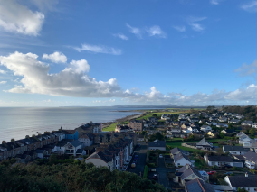
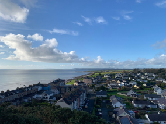

Dari Tanah Air ke Tanah Air
Perjalanan epik dari Kentucky ke Burundi melalui Wales dan Ukraina

Perjalanan epik dari Kentucky ke Burundi melalui Wales dan Ukraina
Setiap manusia adalah seniman, makhluk yang bebas, dipanggil untuk berpartisipasi dalam mengubah dan membentuk kembali kondisi, pemikiran, dan struktur yang membentuk dan menerangkan kehidupan kita.
— Joseph Beuys
Kota Practicum telah mempertemukan para profesional dari berbagai penjuru dunia. Hari ini, Galeri Seni Practicum dengan bangga mempersembahkan cerita dan gambar dari beberapa orang yang mendedikasikan waktu dan upaya mereka untuk membuat para profesional teknologi masa depan di kota ini merasa seperti di rumah sendiri. Masing-masing dari kita memiliki cerita unik tentang tempat kita berasal. Jangan ragu untuk menambahkan cerita Anda sendiri dan karya seni visual yang didedikasikan untuk kampung halaman Anda ke dalam koleksi kami. Dari mana pun Anda berasal, kami senang Anda adalah tetangga kami.
 



Artis
Natalia Dolgushina, produser konten
Kyiv (atau Kiev), ibu kota Ukraina, adalah kota besar yang terletak di tepi sungai Dnipro. Tentu saja, tidak ada orang waras yang akan berenang di sungai, kecuali mereka dibesarkan di sini, dalam hal ini mereka mungkin pernah mencobanya. Musim panas di sini panas, dan musim dinginnya berangin, tetapi musim gugur dan musim semi benar-benar menakjubkan.
Kota itu sendiri merupakan campuran arsitektur prarevolusi, pascaperang, dan soviet, semuanya ditaburi dengan balkon yang dimodifikasi. Jika Anda berada di tepi kanan sungai Dnipro, pemandangannya sulit untuk dilalui oleh orang-orang yang bersepeda dan yang memakai sepatu hak tinggi. Tepi kiri dianggap jauh kurang menarik dan bergengsi, bahkan oleh orang-orang yang tinggal di pinggiran paling kanan.